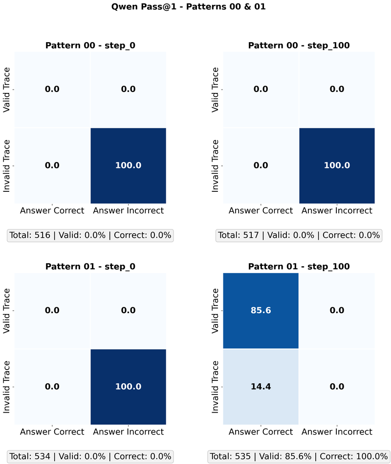
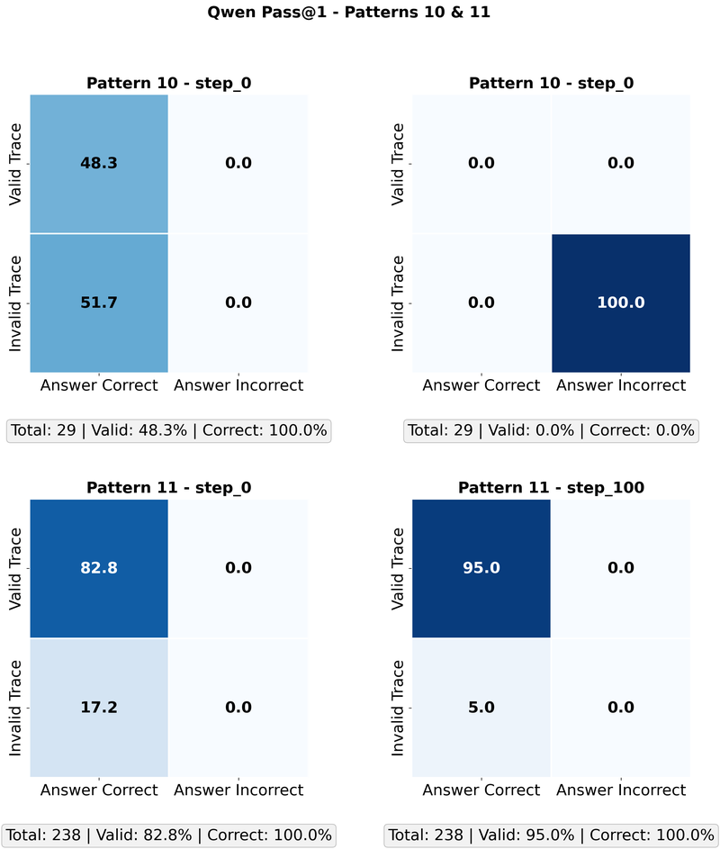

Local Coherence or Global Validity? Investigating RLVR Traces in Math Domains
S. R. Samineni, D. Kalwar, V. Gangal, S. Bhambri, S. Kambhampati

RLVR makes reasoning traces locally coherent, not necessarily valid
RLVR rewards only the final answer, yet claims are made about better reasoning traces. We measure what happens to the intermediate tokens that are never directly rewarded.
Does RL post-training improve the reasoning, or only the answer?
GRPO on Qwen-2.5-0.5B with GSM8K. Each test problem falls into one of four patterns by whether the base model (first digit) and the RL model (second digit) answer it correctly.
Trace coherence, measured with first-order logic
- Translate each trace into a first-order-logic representation and tag errors with a taxonomy (false premise, false rule, calculator error, format error).
- A trace is coherent if it has no errors. Validity, logical soundness, is the stronger property.
- Pass@K trace coherence, checked against human annotations.
trace coherence on problems only the RL model solves (pattern 01), across Pass@K.
up to 96%trace coherence for problems both models solve (pattern 11) after RL.


Why it matters
Improved local coherence in reasoning steps does not guarantee a valid proof or a correct answer. A model can learn to write steps that look consistent while the solution as a whole is still wrong. RLVR as Prompt Augmentation follows up with a theory of why the objective behaves this way.